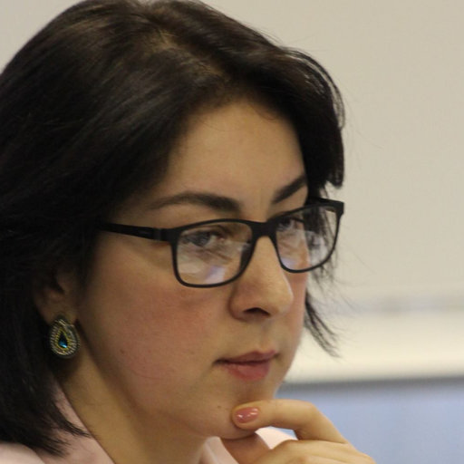
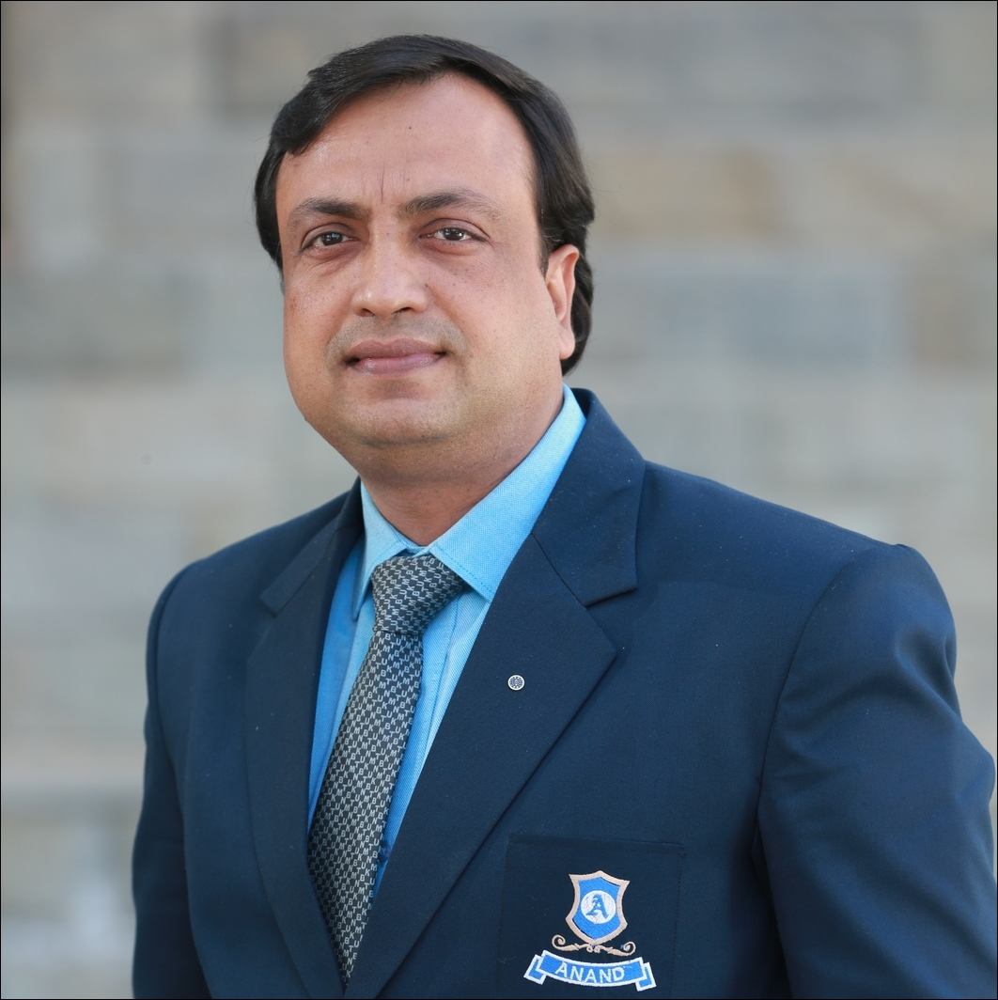

About the Conference
From November 22 to November 28, 2022, the Peoples' Friendship University of Russia, the scientific laboratory "Center for the Study of Philosophy and Culture of India" Purushottama " and the Anand International College of Engineering, Jaipur, India are holding the first Annual International Conference in memory of Vsevolod Sementsov "Philosophical Sanskrit Texts: Problems of Reading and Interpretation"
The organizing committee of the conference is pleased to invite Russian and foreign scientists to present the results of their research in the field of classical Indian philosophy and related fields (Sanskritology and literary criticism).
The goal of the conference organizers is to bring together all specialists working in various areas of research in the Indian intellectual tradition, to create a permanent online and offline platform for the exchange of scientific experience, and to form new areas of research in this area. Thus, participation in the conference may be of interest to philosophers, historians of philosophy, literary critics, culturologists, religious scholars, and orientalists.
Another path opens up when we start from the Self — from what we know best, what is revealed to us more than anything else, and what can never and under no circumstances be removed from any picture of the world. To begin with the Self means to begin with the Self as consciousness; but how to do that? And what then is the Other - the Other, taken as the world, society, my body and brain, as well as other people and another culture? In comparison with the materialistic paradigm, the Self and the Other change places here. But not only. There is a kind of doubling of the Other. After all, my own culture, my language, my thinking traditionally acts as the Other for me insofar as I receive them from Others - and I always receive them from Others. And in this sense, I am the Other - because without my language and my culture, I am an empty sound and nothing. But apart from my culture and my language, In addition to the experience of thinking that my culture gives me, there are Other cultures, Other languages and experiences of Another way of thinking. Here it is, doubling. Those Others who have never become Me yet, about whom I did not know how to make them Mine - how to appropriate them. And if humanity lies in mastering and appropriating the Other, so that the Other enters into My flesh and blood, then we are still not human enough. Because until now we — all of us — have limited ourselves to Our culture, Our experience of thinking, Our language, pushing Others — the same, but different — experiences beyond the border of otherness, making them such Others that are not assimilated and not assimilated. how to make them your own - how to appropriate them. And if humanity lies in mastering and appropriating the Other, so that the Other enters into My flesh and blood, then we are still not human enough. Because until now we — all of us — have limited ourselves to Our culture, Our experience of thinking, Our language, pushing Others — the same, but different — experiences beyond the border of otherness, making them such Others that are not assimilated and not assimilated. how to make them your own - how to appropriate them. And if humanity lies in mastering and appropriating the Other, so that the Other enters into My flesh and blood, then we are still not human enough. Because until now we — all of us — have limited ourselves to Our culture, Our experience of thinking, Our language, pushing Others — the same, but different — experiences beyond the border of otherness, making them such Others that are not assimilated and not assimilated.
The conference is dedicated to the memory of the outstanding Russian Indologist Vsevolod Sergeevich Sementsov (07/02/1941 - 01/12/1986) - one of the leading Russian experts in the field of classical Indian philosophy. Vsevolod Sergeevich was a teacher of Sanskrit to a number of prominent Russian orientalists, specialists in the field of Indian philosophy, in particular, V.K. Shokhin and V.G. Lysenko.
V.S. Sementsov is known to a wide range of readers as the author of an unsurpassed translation from Sanskrit into Russian of the outstanding monument of Indian religious literature, the Bhagavad Gita. The study of this monument is still striking in its relevance, depth of thought and talented penetrating description of the most important fragments of the text.
Based on the results of the conference, it is planned to publish an online collection of abstracts included in the RSCI. The most outstanding speeches, designed in the form of articles, will be published in the Bulletin of the RUDN University, Series "Philosophy" (indexed in Scopus).
The final results of the conference will be summed up in the form of an electronic and printed edition of the Proceedings of the Conference (in English), which will include the best reports of the conference participants. Invitations for publication will be sent to authors following the conference.
The main directions of the conference:
- philosophical texts in Sanskrit : problems of reading and interpretation
- classical Indian philosophy : terminological analysis of basic philosophical terms on the example of yoga, sankhya, vedanta, mimamsa, nyaya, vaisheshika, buddhism, jainism
- a methodology for studying highly developed non-European philosophical traditions.
Applications are also accepted on the following topics:
- Sanskritology - Buddhology - Literary criticism - Research methodology and history of Indology - Reception of Indian culture in Russia and in the West
- A number of scientific seminars and round tables are expected to be held within the framework of the conference.
- round table: " DigitalIndology ".
- scientific seminar: "Philosophical triptych: meaning-text-culture". Topic of the meeting: "Logical-semantic theory of A. Smirnov and Theory of civilization-specific rationalities of A. Paribka".
- scientific seminar: "Hermeneutic circle: breakpoints" Session topic: "Situational hermeneutics of R. Pskhu".
- scientific seminar: "Philosophical Indology". Theme of the meeting: "Yoga Sutras" of Patanjali and the Arabic paraphrase of Biruni.
- scientific seminar: "Intellectual theater". The topic of the meeting: ""
Official working language of the conference: English. Conference in a mixed format, in person and on the ZOOM online platform.
About RUDN UNIVERSITY, Russia
The University was founded on 5th February, 1960 by the USSR Government. On 22nd February, 1961, the RUDN University was named after Patrice Lumumba — one of the symbols of the African peoples’ fight for independence. Students and academics could be free to pursue their learning, teaching, and research activities at , without being subject to political context, but firmly directed to the grand principles of friendship and mutual support.On February 5, 1992, by the decision of the Government of Russia, the University was renamed to Peoples' Friendship University of Russia.
About PURUSHOTTAMA RESEARCH CENTER, Russia
About the SCIENTIFIC LABORATORY "CENTER FOR RESEARCH OF PHILOSOPHY AND CULTURE OF INDIA" PURUSHOTTAMA " OF THE RUSSIAN UNIVERSITY OF PEOPLES' FRIENDSHIP (Hyper link: http://purushottama.su/) The direction of scientific research of the laboratory is carried out on the topic "Development of a methodology and intellectual base of a new generation for the study of Indian philosophy in its relationship with other leading philosophical traditions of Eurasia." The goal of the project implemented in the laboratory is to develop concepts and new methodological approaches that will allow a fresh look at Indian philosophy, assess its main philosophical concepts and concepts, taking into account changes in the modern world, and identify their intellectual significance for priority philosophical traditions. The scientific research of the laboratory is aimed at creating an advanced methodology for studying a huge layer of sources in the field of Indian philosophy with access to a comparative study of the main philosophical traditions. The tasks of the project implemented on the basis of the laboratory include: Translation into Russian of the most significant contemporary studies of Indian philosophy. Translation into Russian of the main texts of classical Indian philosophy (in Sanskrit, Pali and Tamil). Reassessment, development and testing of various methodological approaches to the study of Indian philosophy. Comparative study of the main spheres of culture. Study of the Influence of Indian Philosophy on the Development of Philosophical Terminology of the Russian Language. Approbation of the research results in teaching courses on Indian philosophy and disciplines directly related to it (history of Indian philosophy, history of Indian logic, literary criticism, history of Indian religions, Sanskrit, Tamil language, methods of Indian yoga, history of Buddhist teachings, etc.).
About ANAND-ICE, Jaipur, INDIA
Anand International College of Engineering, approved by AICTE
and affiliated to RTU, Kota was established at Jaipur in year
2010. The Anand Fraternity is delighted to extend a Warm
Welcome to the Young Minds for the exciting journey of
Education with a Difference. Anand-ICE, the place where we
celebrate excellence and attempt to transform youth into
professionals!
We groom our students in various streams of Engineering and
accelerate a career-oriented training program to make these
young men and women compete in extremely daunting
professional situations. The Anand-ICE has probably the best
Brains as Teachers and Scientists to facilitate premium
Academic excellence along with the nuances of Ethics and
Human Values.
Our placement policy assures 100% placements even the most
challenging market downturns. All this could not be achieved
without a state-of-the-art infrastructure. Anand-ICE is equipped
with world-class facilities and laboratories which makes sure
that the students get world-class practical learning enabling
them to correlate theory with practice effectively. In short, The
Anand-ICE does not leave anything to chance. We engage and
energize students to deliver in the virtual world.
Committees
Steering Committee:
| Pskhu R. V. (Chair) Doctor of Philosophy, Assoc. prof. cafe history of philosophy, RUDN, RUSSIA |
| Praveen Agarwal(Co-Chair) ANAND-ICE, Jaipur, INDIA |
| Vecherina O.P. Candidate of History, Associate Professor of the Department of Mediation in the Social Sphere of MSUPE, Researcher scientific laboratory "Center for the study of philosophy and culture of India" Purushottama "" PFUR |
| Paribok A.V. Candidate of Philological Sciences, Researcher scientific laboratory "Center for the study of philosophy and culture of India" Purushottama "RUDN |
| Putyagina V. N. Researcher of the scientific laboratory "Center for the study of philosophy and culture of India" Purushottama "" PFUR |
| Roman L.G Employee of the scientific laboratory "Center for the Study of Philosophy and Culture of India" Purushottama "" PFUR |
| Sviridova P.M. Employee of the scientific laboratory "Center for the Study of Philosophy and Culture of India" Purushottama "" PFUR |
| Smirnov Andrey Vadimovich Chief Researcher scientific laboratory "Center for the Study of Philosophy and Culture of India" Purushottama "RUDN University, Academician of the Russian Academy of Sciences, 1st Deputy Director of the Institute of Philosophy of the Russian Academy of Sciences |
Conference Chair:
|  | Prof. Pskhu R. V. Doctor of Philosophy, Assoc. prof. cafe history of philosophy, RUDN, RUSSIA |
Organizing Chair:
|  | Prof. Praveen Agarwal ANAND-ICE, Jaipur, INDIA |
Organizing Committee :
- Pskhu Ruzana Vladimirovna
– Doctor of Philosophy, Associate Professor of the Department of History of Philosophy of the Peoples' Friendship University of Russia, Head of the Scientific Laboratory "Center for the Study of Philosophy and Culture of India" Purushottama "of the People's Friendship University of Russia, Moscow. - Praveen Agarwal
– Ph.D., leading researcher scientific laboratory "Center for the study of philosophy and culture of India" Purushottama "PFUR, prof. ANAND International College of Engineering, Jaipur, India. - Burmistrov Sergey Leonidovich
– Doctor of Philological Sciences, Leading Researcher, Head. postgraduate student at the Institute of Oriental Manuscripts of the Russian Academy of Sciences, St. Petersburg. - Paribok Andrey Vsevolodovich
– Ph.D. in Philology, Researcher of the Scientific Laboratory “Purushottama Research Center for Philosophy and Culture of India” PFUR, Moscow. - Vecherina Olga Pavlovna
- Candidate of History, Associate Professor of the Department of Mediation in the Social Sphere of MSUPE, Researcher scientific laboratory "Center for the Study of Philosophy and Culture of India" Purushottama "RUDN University, Moscow. - Smirnitskaya Anna Aleksandrovna
Candidate of Philological Sciences, Researcher Institute of Oriental Studies of the Russian Academy of Sciences, researcher at the scientific laboratory "Center for the Study of Philosophy and Culture of India" Purushottama "RUDN University, Moscow. - Putyagina Valentina Nikolaevna
- Employee of the scientific laboratory “Purushottama Research Center for Philosophy and Culture of India” PFUR, Moscow. - RomanLiliya Gennadievna
Employee of the scientific laboratory "Center for the Study of Philosophy and Culture of India" Purushottama "RUDN University, Moscow.
Website Development:
- Er. Rajendra Singh
Anand-ICE, Jaipur, INDIA - Er. Anubhav Saxena
Anand-ICE, Jaipur, INDIA
Promotion:
- Er. Sanjog Arora
Anand-ICE, Jaipur, INDIA - Mr. Prakash Singh
Anand-ICE, Jaipur, INDIA - Mr. Rahul Goyal
Anand-ICE, Jaipur, INDIA
Registration Committee:
- Er. Vineet Chabbra
Anand-ICE, Jaipur, INDIA - Er. Dinesh Swami
Anand-ICE, Jaipur, INDIA - Er. Nalin Sharma
Anand-ICE, Jaipur, INDIA - Mr. Saket Dwidedi
Anand-ICE, Jaipur, INDIA
International Program Committee :
- Smirnov A.V.
Chairman of the Program Committee, Senior Researcher scientific laboratory "Center for the Study of Philosophy and Culture of India" Purushottama "RUDN University, Academician of the Russian Academy of Sciences, 1st Deputy Director of the Institute of Philosophy of the Russian Academy of Sciences - Borodai S.Yu.
Deputy dir. Center for Philosophy of Consciousness and Cognitive Sciences, Institute of Philosophy RAS - Korneeva T.G.
n.s. scientific laboratory "Center for the Study of Philosophy and Culture of India" Purushottama "RUDN University, Ph.D., researcher department of the philosophy of the Islamic world of the Institute of Philosophy of the Russian Academy of Sciences - Lukashev A.A.
Ph.D., senior researcher Department of Philosophy of the Islamic World, Institute of Philosophy of the Russian Academy of Sciences, research laboratory employee - Paribok A.V.
Candidate of Philological Sciences, Researcher scientific laboratory "Center for the study of philosophy and culture of India" Purushottama "PFUR - Pskhu R.V.
Doctor of Philosophy, Senior Researcher, Head of the Scientific Laboratory "Center for the Study of Philosophy and Culture of India" Purushottama "" PFUR - Ryskeldieva L.T.
Professor of KFU named after V.I. Vernadsky, corresponding member. RAS, Simferopol - Solondaev V.K.
Ph.D., Associate Professor of the Department. General Psychology FGBOU Yaroslavl State University. P.G. Demidov - Fedorova Yu.E.
Candidate of Philological Sciences, Researcher Department of Philosophy of the Islamic World of the Institute of Philosophy of the Russian Academy of Sciences.
National Program Committee:
- Dr. Bhawna Mathur
Anand-ICE, Jaipur, INDIA - Er. Anubhav Saxena
Anand-ICE, Jaipur, INDIA - Mr. Prakash Singh
Anand-ICE, Jaipur, INDIA - Er. Sanjog Arora
Anand-ICE, Jaipur, INDIA - Er. Rahul Goyal
Anand-ICE, Jaipur, INDIA
Speakers
- Pskhu Ruzana Vladimirovna – Doctor of Philosophy, Associate Professor of the Department of History of Philosophy of the Peoples' Friendship University of Russia, Head of the Scientific Laboratory "Center for the Study of Philosophy and Culture of India" Purushottama "of the People's Friendship University of Russia, Moscow.
- Praveen Agarwal – Ph.D., leading researcher scientific laboratory "Center for the study of philosophy and culture of India" Purushottama "PFUR, prof. ANAND International College of Engineering, Jaipur, India.
- Burmistrov Sergey Leonidovich – Doctor of Philological Sciences, Leading Researcher, Head. postgraduate student at the Institute of Oriental Manuscripts of the Russian Academy of Sciences, St. Petersburg.
- Paribok Andrey Vsevolodovich – Ph.D. in Philology, Researcher of the Scientific Laboratory “Purushottama Research Center for Philosophy and Culture of India” PFUR, Moscow.
- Vecherina Olga Pavlovna - Candidate of History, Associate Professor of the Department of Mediation in the Social Sphere of MSUPE, Researcher scientific laboratory "Center for the Study of Philosophy and Culture of India" Purushottama "RUDN University, Moscow.
- Smirnitskaya Anna Aleksandrovna – Candidate of Philological Sciences, Researcher Institute of Oriental Studies of the Russian Academy of Sciences, researcher at the scientific laboratory "Center for the Study of Philosophy and Culture of India" Purushottama "RUDN University, Moscow.
- Putyagina Valentina Nikolaevna - employee of the scientific laboratory “Purushottama Research Center for Philosophy and Culture of India” PFUR, Moscow.
- RomanLiliya Gennadievna-employee of the scientific laboratory "Center for the Study of Philosophy and Culture of India" Purushottama "RUDN University, Moscow.
Program
For program information kindly click here :
Registration
For registration kindly click here :
Online Paper Submission:
- Please send full paper (pdf) to the following email : praveen.agarwal@anandice.ac.in
Important Dates:
| Last date for online registration | Nov 22,2022 |
Publication
All presented talks and papers will be peer reviewed and considered for inclusion in the FULL-TEXT PROCEEDING BOOK of the Vsevolod S. Sementsov Annual Memorial International Conference Readings ‘Philosiphical Sanskrit Texts: Problems of Reading and Interpretation with ISBN number.
Contact
Prof. Pskhu R. V.
Organizing Chair
RUDN University, RUSSIA
Email: r.pskhu@mail.ru
Prof. Praveen Agarwal
Co-Chair
ANAND-ICE, Jaipur, INDIA
Email: praveen.agarwal@anandice.ac.in
Venue for Offline Mode
ANAND-ICE, Jaipur,INDIA
Venue for Online Mode
ANAND-ICE, Jaipur, INDIA via Zoom
By Road: Jaipur is located on National Highway No.8 connecting Delhi and Mumbai. National Highway 12 links Jaipur with Kota and National Highway 11 links Bikaner with Agra passing through Jaipur. RSRTC operates bus service to major cities in Rajasthan, New Delhi, Uttar Pradesh, Haryana, Madhya Pradesh, Maharashtra, Punjab and Gujarat. City buses are operated by Jaipur City Transport Services Limited (JCTSL) of RSRTC. The service operates more than 400 regular and low-floor buses. Major bus depots are located at Vaishali Nagar, Vidyadhar Nagar and Sanganer.
By Train: Jaipur is the headquarters of North Western Zone of India n Railways. Jaipur Junction railway station is well connected to all major cities of INDIA like Delhi, Mumbai, Hyderabad, Kolkata, Chennai, Bengaluru, Indore, Lucknow and Ahmedabad. Other stations include Gandhinagar, Durgapura, Jagatpura, Ninad Benad and Sanganer. Few important train from New Delhi 19032 Yoga Express, 14659 Delhi-Jaisalmer Express,12958 Rajdhani.
By Metro: Phase-1A is operational between Mansarovar and Chandpole consisting of 9 stations namely Mansarovar, New Aatish Market, Vivek Vihar, Shyam Nagar, Ram Nagar, Civil Lines, Railway Station, Sindhi Camp and Chandpole. Phase-1B is under construction.
By Air: Jaipur International Airport is in Sanganer, 10 km (6 miles) from the centre. Jaipur Airport also provides air cargo services. During winter, sometimes flights towards Indira Gandhi International Airport are diverted to Jaipur Airport due to heavy fog in Delhi. The airport operates regular domestic services to major INDIA n cities including Ahmedabad, Bengaluru, Chandigarh, Raipur, Chennai, Delhi, Guwahati, Hyderabad, Indore, Kolkata, Lucknow, Mumbai, Pune, Surat, Udaipur and Varanasi. International destinations served include Dubai, Muscat, Bangkok, Sharjah and Kuala Lumpur.